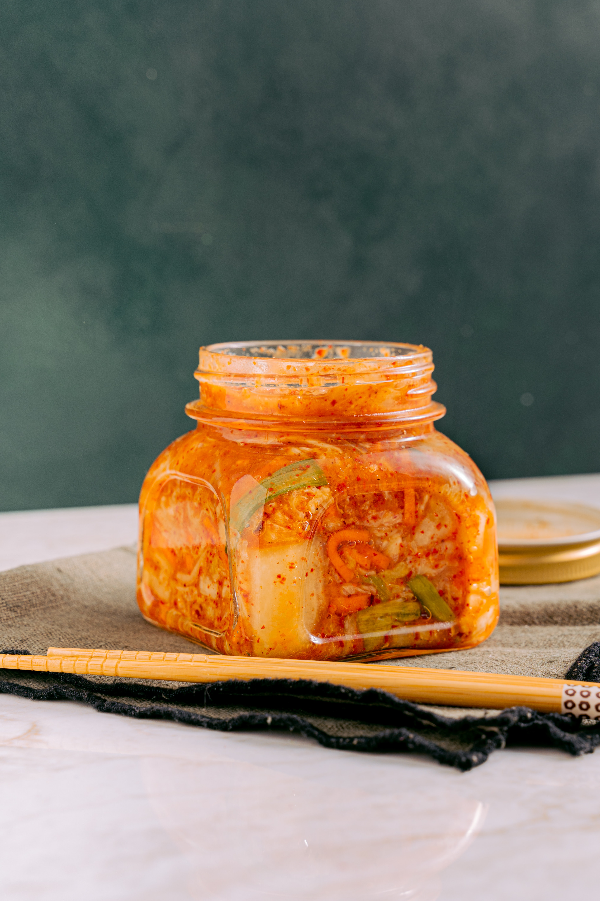

If you love authentic Korean cuisine, try this classic kimchi recipe and make your own. It's not as complicated or time-consuming as you might think. Kimchi is a fermented dish — the more it ages, the better it tastes.
Transfer kimchi to sterilized airtight containers and refrigerate for three days before serving.
If you want to serve it the very next day, don't refrigerate it.